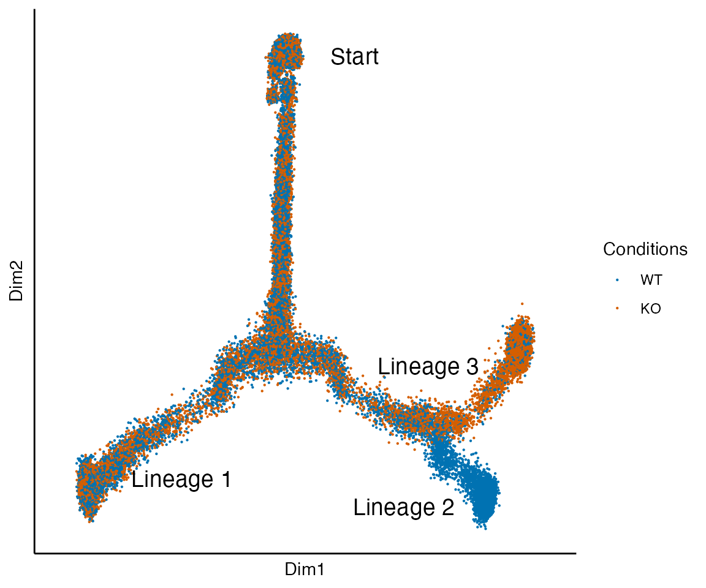
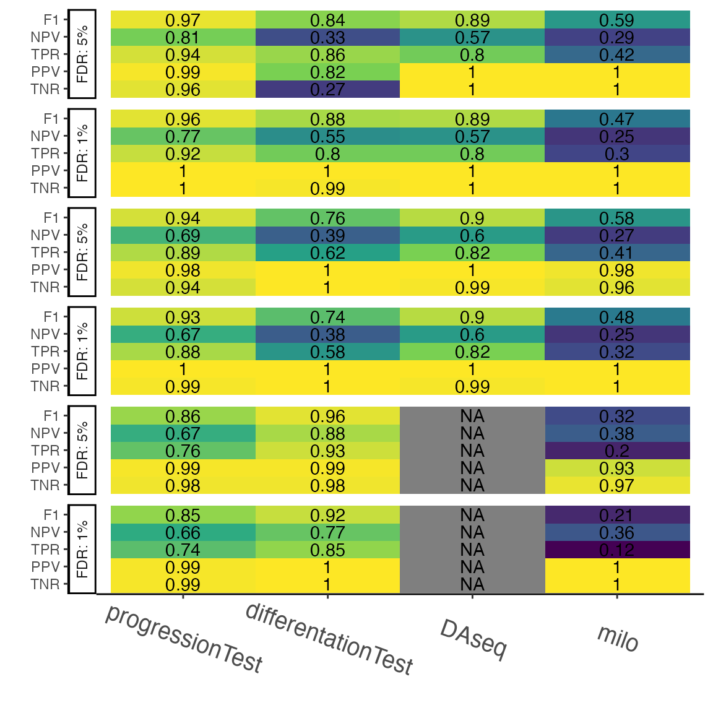

Running and analyzing the simulations
Hector Roux de Bézieux
Simulations.Rmdlibs <- c("here", "dplyr", "stringr", "tidyr", "SingleCellExperiment", "slingshot", "condiments", "cowplot", "dyngen", "ggplot2", "condimentsPaper") suppressMessages( suppressWarnings(sapply(libs, require, character.only = TRUE)) )
## here dplyr stringr
## TRUE TRUE TRUE
## tidyr SingleCellExperiment slingshot
## TRUE TRUE TRUE
## condiments cowplot dyngen
## TRUE TRUE TRUE
## ggplot2 condimentsPaper
## TRUE TRUErm(libs) theme_set(theme_classic())
The simulations are based on the dyngen package(Cannoodt et al. 2020).
Running the simulations
This can be very long, we recommand running this in a separate script. None of the code in this section is run while compiling the vignettes.
Setting the parameters
library(BiocParallel) set.seed(97174) options(Ncpus = 16L) BPPARAM <- bpparam() BPPARAM$progressbar <- TRUE BPPARAM$workers <- 30 ratio <- c(.5, .8, .9, .95) n_boot_real <- 50 frac_real <- .1 n_boot_null <- 100 frac_null <- .05
sub_sample <- function(sce, frac) { df <- colData(sce) %>% as.data.frame() %>% mutate(id = as.numeric(rownames(.))) %>% group_by(condition) %>% sample_frac(frac) return(sce[, df$id]) }
Bifurcating trajectory with two conditions
res <- list() for (multiplier in c(ratio, round(1 / ratio, 2)[4:1])) { sce <- create_bifurcating_simu(multiplier = multiplier) if (multiplier == .5) fork_sce <- sce set.seed(2019) res_loc <- bplapply(seq_len(n_boot_real), function(b, frac) { return(anayze_all(.sub_sample(sce, frac = frac))) }, frac = frac_real, BPPARAM = BPPARAM) res[[as.character(multiplier)]] <- bind_rows(res_loc) } real <- bind_rows(res, .id = "multiplier") %>% clean_results()
sce <- create_bifurcating_simu(multiplier = 1, nSim = 400) set.seed(2019) res_loc <- bplapply(seq_len(n_boot_null), function(b, frac) { return(anayze_all(sub_sample(sce, frac = frac))) }, frac = frac_null, BPPARAM = BPPARAM) null <- bind_rows(res_loc) %>% mutate(multiplier = 1) %>% clean_results()
fork <- bind_rows("Real" = real, "Null" = null, .id = "Type") %>% arrange(multiplier)
Two bifurcations and two conditions
res <- list() for (multiplier in c(ratio, round(1 / ratio, 2)[4:1])) { sce <- create_consecutive_bifurcating_simu(multiplier = multiplier) if (multiplier == .5) tree_sce <- sce set.seed(2019) res_loc <- bplapply(seq_len(n_boot_real), function(b, frac) { return(anayze_all(.sub_sample(sce, frac = frac))) }, frac = frac_real, BPPARAM = BPPARAM) res[[as.character(multiplier)]] <- bind_rows(res_loc) } real <- bind_rows(res, .id = "multiplier") %>% clean_results()
sce <- create_consecutive_bifurcating_simu(multiplier = 1, nSim = 400) set.seed(2019) res_loc <- bplapply(seq_len(n_boot_null), function(b, frac) { return(anayze_all(sub_sample(sce, frac = frac))) }, frac = frac_null, BPPARAM = BPPARAM) null <- bind_rows(res_loc) %>% mutate(multiplier = 1) %>% clean_results()
tree <- bind_rows("Real" = real, "Null" = null, .id = "Type") %>% arrange(multiplier)
Bifurcating trajectory with three conditions
res <- list() for (multiplier in ratio) { sce <- create_bifurcating_three_conditions_simu(multiplier = multiplier) if (multiplier == .5) complex_sce <- sce set.seed(2019) res_loc <- bplapply(seq_len(n_boot_real), function(b, frac) { return(anayze_all(.sub_sample(sce, frac = frac))) }, frac = frac_real, BPPARAM = BPPARAM) res[[as.character(multiplier)]] <- bind_rows(res_loc) } real <- bind_rows(res, .id = "multiplier") %>% clean_results()
sce <- create_bifurcating_three_conditions_simu(multiplier = 1, nSim = 400) set.seed(2019) res_loc <- bplapply(seq_len(n_boot_null), function(b, frac) { return(anayze_all(sub_sample(sce, frac = frac))) }, frac = frac_null, BPPARAM = BPPARAM) null <- bind_rows(res_loc) %>% mutate(multiplier = 1) %>% clean_results()
complex <- bind_rows("Real" = real, "Null" = null, .id = "Type") %>% arrange(multiplier)
Exploring the simulations
Low dimension representation
Bifurcating trajectory with two conditions
data("fork_sce", package = "condimentsPaper") plot_reduced_dim_together(fork_sce)
data("tree_sce", package = "condimentsPaper") plot_reduced_dim_together(tree_sce)

data("complex_sce", package = "condimentsPaper") plot_reduced_dim_together(complex_sce)
Network branching
set.seed(0989021) backbone <- backbone_bifurcating() model_common <- initialise_model( backbone = backbone, num_cells = 100, num_tfs = nrow(backbone$module_info), num_targets = 250, num_hks = 250, simulation_params = simulation_default( census_interval = 10, ssa_algorithm = ssa_etl(tau = 300 / 3600), experiment_params = simulation_type_wild_type(num_simulations = 100) ) ) %>% generate_tf_network()
## Generating TF networkset.seed(298) net <- plot_backbone_modulenet_simplify(model_common) + guides(col = FALSE, edge_width = FALSE) + ggraph::scale_edge_width_continuous(range = c(.5, .5)) + theme(plot.background = element_blank())
## Scale for 'edge_width' is already present. Adding another scale for
## 'edge_width', which will replace the existing scale.net <- ggdraw() + draw_plot(net, 0, 0, scale = 1.2) net
set.seed(1082) backbone <- backbone_consecutive_bifurcating() model_common <- initialise_model( backbone = backbone, num_cells = 100, num_tfs = nrow(backbone$module_info), num_targets = 250, num_hks = 250, simulation_params = simulation_default( census_interval = 10, ssa_algorithm = ssa_etl(tau = 300 / 3600), experiment_params = simulation_type_wild_type(num_simulations = 100) ) ) %>% generate_tf_network()
## Generating TF networkset.seed(2) net2 <- plot_backbone_modulenet_simplify(model_common) + guides(col = FALSE, edge_width = FALSE) + ggraph::scale_edge_width_continuous(range = c(.5, .5)) + theme(plot.background = element_blank())
## Scale for 'edge_width' is already present. Adding another scale for
## 'edge_width', which will replace the existing scale.net2 <- ggdraw() + draw_plot(net2, 0, 0, scale = 1.2) net2
Analyzing the simulations
data("fork", package = "condimentsPaper") data("tree", package = "condimentsPaper") data("complex", package = "condimentsPaper")
All together
df <- lapply(list("fork" = fork, "tree" = tree, "complex" = complex), function(dataset) { bind_rows(".05" = all_metrics(dataset, .05), ".01" = all_metrics(dataset, .01), .id = "cutoff") %>% return() } ) %>% bind_rows(.id = "dataset") %>% mutate(value = round(value, 2))
## Joining, by = "test_type"
## Joining, by = "test_type"
## Joining, by = "test_type"
## Joining, by = "test_type"
## Joining, by = "test_type"
## Joining, by = "test_type"
## Joining, by = "test_type"
## Joining, by = "test_type"labs_pct <- function(Panel) { val <- word(Panel) %>% as.numeric() return(paste0("FDR: ", round(100 * val), "%")) } df <- df %>% mutate(metric = factor(metric, levels = c("TNR", "PPV", "TPR", "NPV", "F1")), dataset = factor(dataset, levels = c("fork", "tree", "complex"))) %>% arrange(dataset, metric) %>% mutate(test_type = factor(test_type, levels = c("condiments_prog", "condiments_diff", "DAseq", "milo")), Panel = paste0(cutoff, " ", dataset), Panel = factor(Panel, levels = unique(Panel)), label = if_else(is.na(value), "NA", as.character(value))) p <- ggplot(df, aes(x = test_type, y = metric, label = label, fill = scaled)) + geom_tile() + geom_text(na.rm = FALSE) + scale_fill_viridis_c() + scale_x_discrete(labels = c("progressionTest", "differentationTest", "DAseq", "milo")) + labs(x = "", y = "", fill = "Difference with\noptimal value") + theme(legend.position = "bottom") + facet_grid(Panel ~ ., switch = "y", labeller = labeller(Panel = labs_pct)) + theme(axis.text.x = element_text(size = 14, angle = -20, vjust = .2)) p

Special look at three condition situation
ggplot(complex, aes(x = as.numeric(factor(multiplier, levels = unique(multiplier))), y = adjusted_p_value)) + geom_boxplot(aes(group = interaction(test_type, multiplier), fill = test_type)) + geom_hline(yintercept = .05) + scale_x_continuous(labels = unique(complex$multiplier), breaks = 1:5) + scale_color_brewer(palette = "Pastel2") + scale_fill_brewer(palette = "Pastel2") + labs(x = "Effect Size: Multiplier on the master regulator", y = "adjusted p-value", col = "Test", fill = "Test") + theme(legend.position = "bottom")

References
Cannoodt, Robrecht, Wouter Saelens, Louise Deconinck, and Yvan Saeys. 2020. “Dyngen: A multi-modal simulator for spearheading new single-cell omics analyses.” bioRxiv, February, 2020.02.06.936971. https://doi.org/10.1101/2020.02.06.936971.